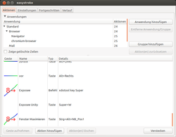

Easystroke
Dieser Artikel wurde für die folgenden Ubuntu-Versionen getestet:
Ubuntu 14.04 Trusty Tahr
Zum Verständnis dieses Artikels sind folgende Seiten hilfreich:
Easystroke  ist ein Mausgestenprogramm für den XServer. Durch bestimmte festgelegte Mausbewegungen, die der Benutzer nach Drücken einer festgelegten Maustaste (oder sonstigen Taste) ausführt, können verschiedenste Befehle ausgeführt werden. So kann man einfach durch vorher definierte Mausgesten Fenster maximieren/minimieren, Tabs öffnen/schließen, Kommandozeilenbefehle ausführen und vieles mehr.
ist ein Mausgestenprogramm für den XServer. Durch bestimmte festgelegte Mausbewegungen, die der Benutzer nach Drücken einer festgelegten Maustaste (oder sonstigen Taste) ausführt, können verschiedenste Befehle ausgeführt werden. So kann man einfach durch vorher definierte Mausgesten Fenster maximieren/minimieren, Tabs öffnen/schließen, Kommandozeilenbefehle ausführen und vieles mehr.
Vor- und Nachteile¶
Mausgesten sind von Browsern bekannt. Easystroke funktioniert aber auch in Nautilus. Mit der Geste „nach links ( Alt + ← )“ kann zurück in den vorigen Ordner gewechselt werden. Auch für „Schließen“, „Wiederherstellen“, „Maximieren“ oder „Minimieren“ kann für die entsprechenden Shortcuts Gesten definiert werden, welche wesentlich leichter zu zeichnen sind als die entsprechenden Buttons anzuklicken. Auch werden die Wege teilweise kürzer, z.B. bei einer Geste für Aktivitäten in GNOME 3. Es können aber auch Gesten fürs Starten von Programmen definiert werden.
Ein Nachteil ist wie bei den Shortcuts, dass die Gesten gelernt bzw. bei den Definitionen nachgelesen werden müssen.
Installation¶
Easystroke ist in den Paketquellen enthalten, es muss lediglich das folgende Paket installiert [1] werden:
easystroke (universe)
 mit apturl
mit apturl
Paketliste zum Kopieren:
sudo apt-get install easystroke
sudo aptitude install easystroke
Benutzung¶
Programmstart¶
Der Befehl
easystroke
startet das Programm [2]. Sobald easystroke eingerichtet ist, kann man einen automatischen Start einrichten [3] oder einen Menüeintrag für das Programm anlegen [4].
Einstellungen¶

Mit einem  -Klick auf das easystroke-Symbol erreicht man einen Konfigurationseditor. Dort kann zunächst die gewünschte Aktion hinzugefügt und anschließend die dafür gewünschte Mausgeste aufgenommen werden. Maustaste 2 beschreibt hierbei das Gedrückthalten von linker UND rechter Maustaste.
-Klick auf das easystroke-Symbol erreicht man einen Konfigurationseditor. Dort kann zunächst die gewünschte Aktion hinzugefügt und anschließend die dafür gewünschte Mausgeste aufgenommen werden. Maustaste 2 beschreibt hierbei das Gedrückthalten von linker UND rechter Maustaste.
Im "Aktionen"-Tab kann man nun globale Mausgesten ("Default") einrichten oder für einzelne Programme eigene Mausgesten erstellen. Möchte man der Programmliste eine neue Anwendung hinzufügen, muss diese zunächst geöffnet sein. Nachdem man auf "Anwendung hinzufügen" geklickt hat, muss man auf die entsprechende Anwendung klicken, sie wird dann automatisch hinzugefügt und man kann ihr eigene Mausgesten zuweisen.
Problembehebung¶
easystroke startet nicht¶
Wenn easystroke nicht startet, kann das daran liegen, dass die Konfigurationsdateien nicht dem Benutzer gehören, der versucht, easystroke zu starten. Um zu überprüfen, führt man folgenden Befehl im Terminal [6] aus:
cd ~ ls -la | grep .easystroke
Die Ausgabe für den Ordner ~/.easystroke sieht dann beispielsweise wie folgt aus:
drwxr-xr-x 2 root root 4096 2008-11-12 14:15 .easystroke
In diesem Fall sind die Eigentumsrechte dem User root und der Gruppe root zugewiesen. Um die Eigentumsrechte an den Konfigurationsdateien wieder dem Benutzer zuzuweisen, führt man in der Konsole folgenden Befehl aus:
sudo chown -R BENUTZER:GRUPPE -R ~/.easystroke
 Programmübersicht
Programmübersicht- Erstellt mit Inyoka
-
 2004 – 2017 ubuntuusers.de • Einige Rechte vorbehalten
2004 – 2017 ubuntuusers.de • Einige Rechte vorbehalten
Lizenz • Kontakt • Datenschutz • Impressum • Serverstatus -
Serverhousing gespendet von